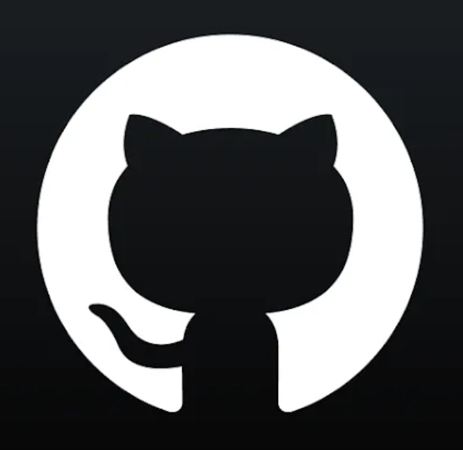

About Me
- 안녕하세요! 이번에 14기 백엔드 파트로 참여하게 된 소프트웨어학부 22학번 김재혁입니다!
-

Hobby
취미로 드럼을 친 지 2년 정도 되었어요. 과제나 시험으로 스트레스 받을 때 드럼을 치면 리프레시가 됩니다!
Favorite
두산 베어스 광팬입니다! 유니폼은 아직 없지만 직관 가는 걸 정말 좋아해요. 같이 가실 분 구해요!
Music
최근에 한로로님 노래에 푹 빠져있어요. 매일 노래도 듣고 드럼으로 카피도 하고 있습니다.
Dislike & TMI
해산물, LG팬, 과제, 시험은 조금 힘들어요... 😅